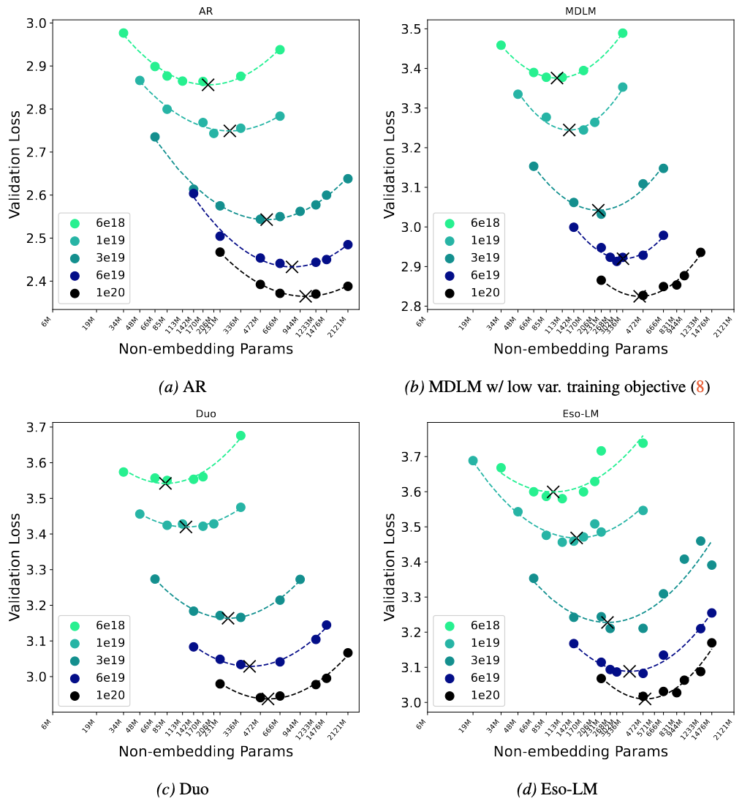

We claim that Masked diffusion isn't the future of diffusion language models!

We perform scaling law analysis the state-of-the-art
Masked diffusion model (MDLM),
Uniform-state discrete diffusion (Duo),
AR-Diffusion-Interpolating model (Eso-LM),
and AR models.